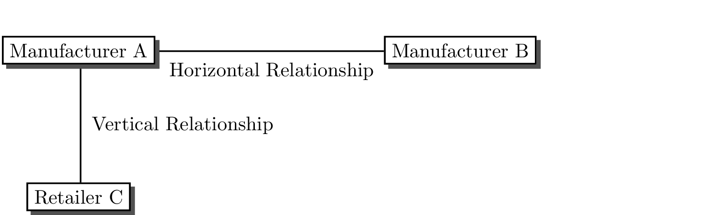
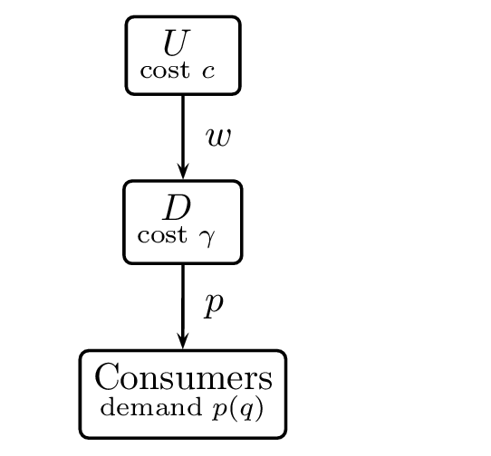
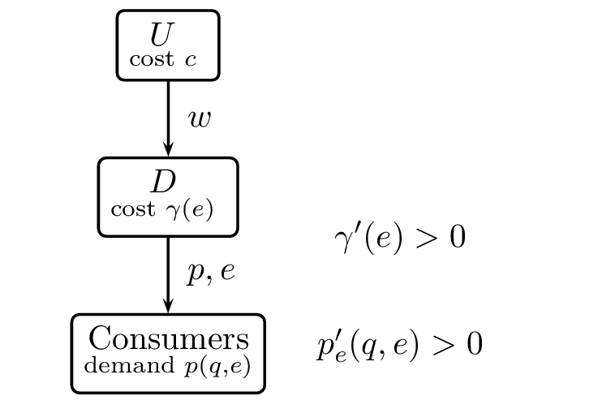
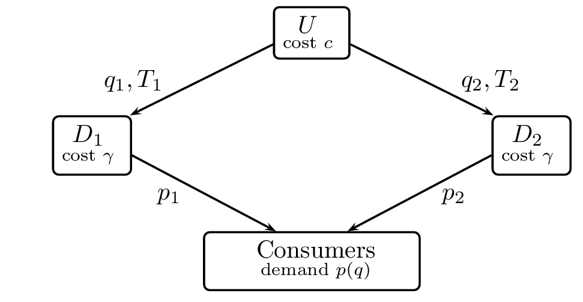
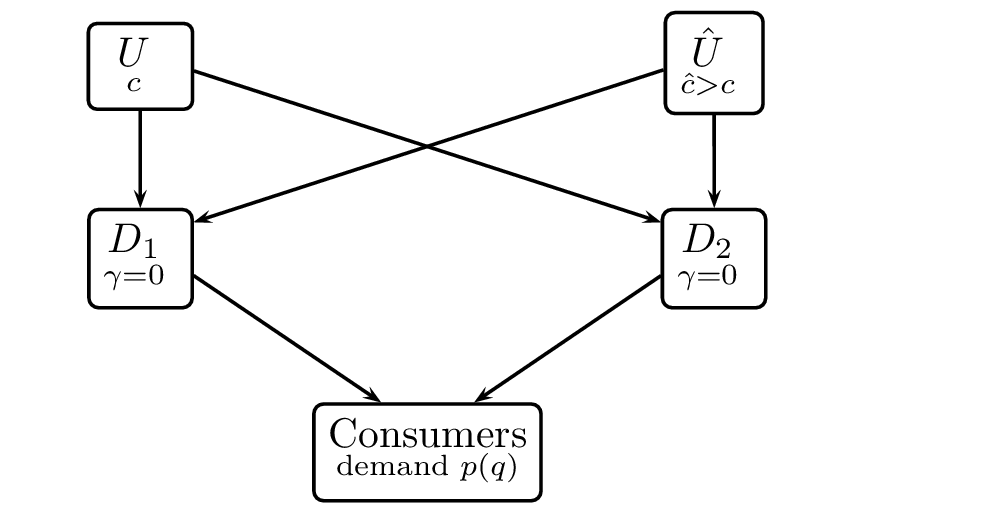
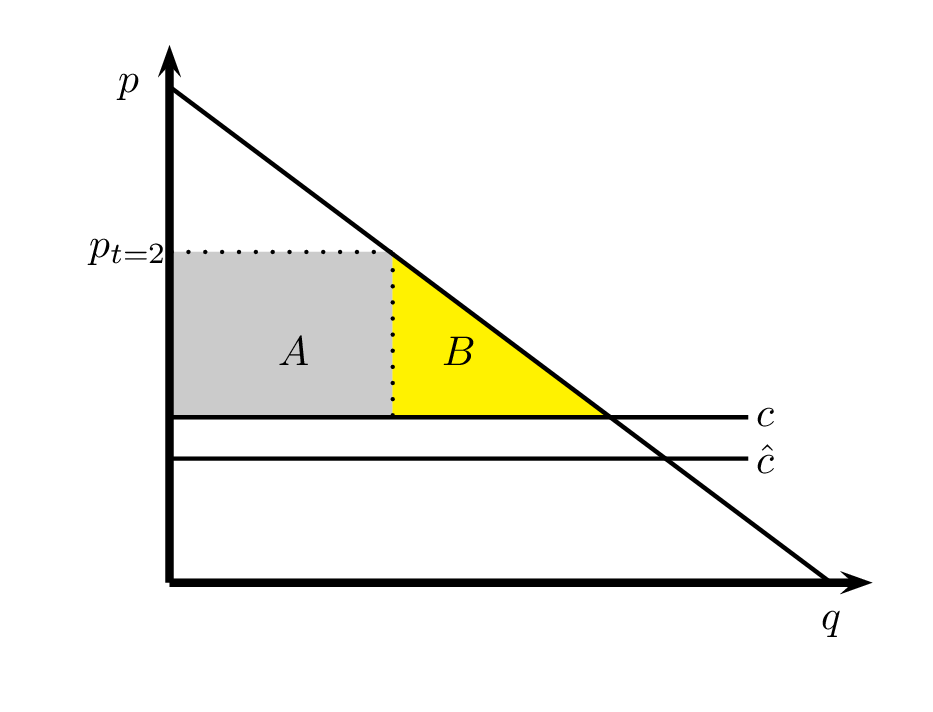
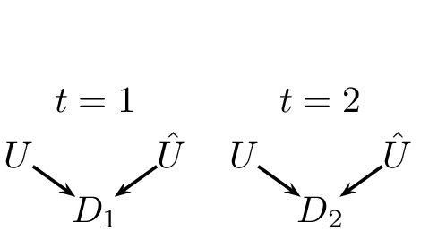
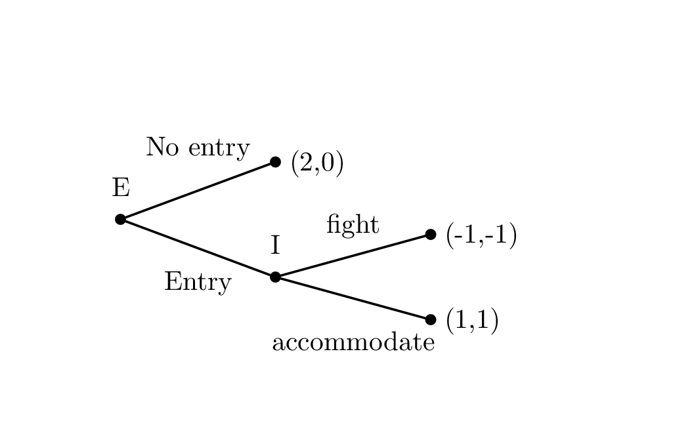
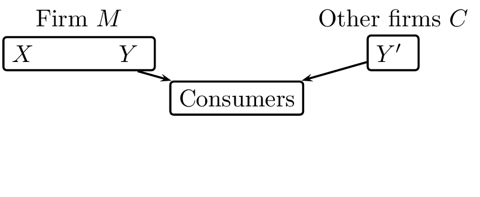
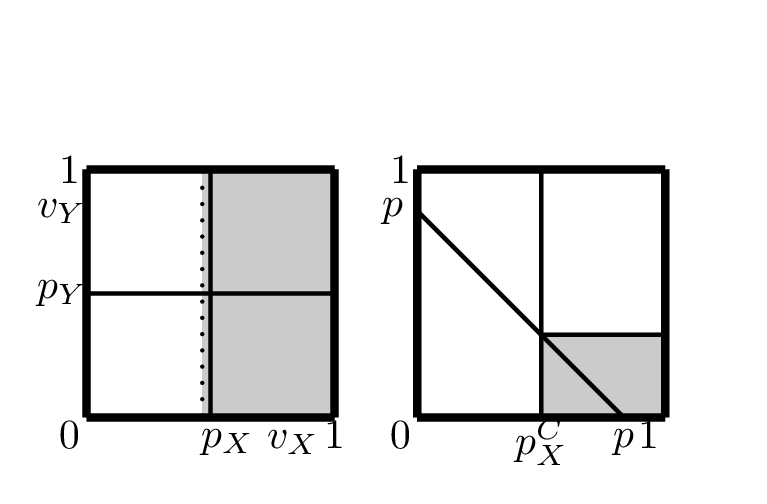

Competition Policy Lectures Notes¶
EU law is structured as follows:¶
Article 101 (previously article 81) concerns agreements between firms¶
- when firms compete on the same market these are called horizontal
agreements
- examples: cartels, collusion, joint ventures, licensing of intellectual property rights, co-operative standard setting
- whereas horizontal agreements are often suspicious, vertical agreements between firms (say, manufacturer and wholesaler or wholesaler and retailer) are more complex as vertical agreements can be both good for firms and beneficial for society (see Guidelines on vertical restraints)
Article 102 (previously article 82) deals with abuse of a dominant position¶
- issues like price discrimination, predatory behavior, tying and bundling, refusal to supply
- the idea is that some firms may have (market) power to the extent that they can force other firms to accept conditions that are not welfare enhancing
Article 101¶
The following shall be prohibited as incompatible with the common market: all agreements between undertakings, decisions by associations of undertakings and concerted practices which may affect trade between Member States and which have as their object or effect the prevention, restriction or distortion of competition within the common market, and in particular those which:
- directly or indirectly fix purchase or selling prices or any other trading conditions;
- limit or control production, markets, technical development, or investment;
- share markets or sources of supply;
- apply dissimilar conditions to equivalent transactions with other trading parties, thereby placing them at a competitive disadvantage;
- make the conclusion of contracts subject to acceptance by the other parties of supplementary obligations which, by their nature or according to commercial usage, have no connection with the subject of such contracts.
Any agreements or decisions prohibited pursuant to this Article shall be automatically void.
The provisions of paragraph 1 may, however, be declared inapplicable in the case of:
any agreement or category of agreements between undertakings;
any decision or category of decisions by associations of undertakings;
any concerted practice or category of concerted practices, which contributes to improving the production or distribution of goods or to promoting technical or economic progress, while allowing consumers a fair share of the resulting benefit, and which does not:
- impose on the undertakings concerned restrictions which are not indispensable to the attainment of these objectives;
- afford such undertakings the possibility of eliminating competition in respect of a substantial part of the products in question.
The interpretation of the concepts above is as follows¶
- agreements between undertakings

- horizontal agreements: cartel, joint ventures, licensing, cooperative standard setting
- vertical restraints:
- selective distribution: not all retailers sell manufacturer’s products
- exclusive dealership: retailers sell only one manufacturer’s products
- exclusive territories: only one retailer within a certain area is supplied by the manufacturer
- resale price maintenance: manufacturer prescribes the price (or max. or min. price)
- quantity forcing: retailer has to sell minimum amount of manufacturer’s products
- concerted practices: not necessary that there is an explicit contract
- distortion of competition: we would say reduction of welfare
- fix prices: price fixing is seen as a particularly serious offence
- limit or control production, markets, technical development, or investment : a cartel will try to limit production to get to the monopoly output level, but can also reduce the speed of innovation
- share markets: firms can collude by splitting up different markets, say one firm produces in Germany and another in Belgium etc.
- apply dissimilar conditions to equivalent transactions: e.g. price discrimination
- which contributes to improving the production or distribution of goods or to promoting technical or economic progress, while allowing consumers a fair share of the resulting benefit: think here of agreements facilitating R&D leading to lower production costs (process innovation), new or better products (product innovation); requirement is that consumers benefit from such arrangements as well
Model of Collusion¶
- Consider \(n\) firms that produce a homogenous good at constant marginal cost \(c\)
- Demand for the good is given by \(p=1-(q_1 + q_2 + \cdots + q_n)\)
- Hence a monopolist would produce output \(q^m\) that solves \begin{equation*} \max_q (1-q-c)q \end{equation*}
- \(q^m = (1-c)/2\) and profits equal \((1-c)^2/4\)
- With Bertrand competition \(p=c\) and firms’ profits equal zero
- If firms collude, charge the monopoly price and share the market equally each firm produces \(q^{Collusion}=\frac{1-c}{2n}\) and earns profits equal to \(\frac{(1-c)^2}{4n}\)
- Is such collusion sustainable?
- Incentive Compatibility:
- Suppose the game is repeated over time and firms agree to charge the monopoly price
- Further, they agree that if one firm deviates by charging a lower price, they will all play the Bertrand Nash equilibrium from then onwards
- If a firm sticks to the collusive outcome (and all others do so as well), the expected discounted profits equal \(\frac{(1-c)^2}{4n} (1+\delta+\delta^2+\cdots)=\frac{(1-c)^2}{4n}\frac{1}{1-\delta}\)
- where \(\delta\) equals the discount factor
- If a firm decides to deviate, it is optimal to charge a price slightly below the monopoly price; because goods are perfect substitutes all consumers will buy from this deviating firm
- Hence in the deviating period, the deviating firm earns (almost) the monopoly profit but from then on profits are zero as the firm is punished by the other firms for its deviation
- Collusion is IC if \(\frac{(1-c)^2}{4n}\frac{1}{1-\delta} \geq (1-c)^2/4\) or equivalently
- \(n \leq \frac{1}{1-\delta}\)
- Hence the number of firms in the market should be limited (\(n\) small) and firms should be patient enough (\(\delta\) close enough to 1)
Factors facilitating collusion¶
- high concentration in the industry implies low \(n\) and makes collusion more likely
- it is hard to enter the industry: if entry is simple and cheap, colluding on a high price will only attract more firms into the industry diluting the benefits of collusion
- cross ownership: if firm \(i\) owns part of firm \(j\), then deviating increases \(i\)’s profits but reduces the pay offs from its shares in firm \(j\); thus firms less likely to deviate from collusive agreement if there are cross ownership relations
- Orders arrive with high frequency: if the next order is only expected in 5 years time, punishment will not be effective if someone deviates today
- low concentration in buyer market: if there is a single powerful buyer, she can break the collusion by going to one seller, buying all goods from him if he lowers his price and threatening to go to another seller to offer this deal
- stable demand: if demand fluctuates over time (with booms and busts)
collusion will break down:
- Rotemberg and Saloner (AER, 1986): collusion breaks down in booms: by deviating in boom earn monopoly profits when demand is high while you are punished at demand levels which are on average lower
- Green and Porter (Ectra, 1984) collusion breaks (temporarily) down in busts: firms cannot perfectly observe market demand and other firms’ prices: hence when demand for firm \(i\)’s products is low this may be due to a bust or due to another firm deviating from collusion; to keep collusion IC firms have to punish in case of low demand for their products
- Homogenous goods and symmetric firms make it easy to coordinate on the collusive price: in this sense these factors facilitate collusion
- Multi market contacts: it is easier to collude with firm \(j\) in a certain market if you can punish \(j\) in case of deviation not only in this market but also in other markets
- To the extent that excess capacity is needed to be able to punish deviating firms, excess capacity facilitates collusion (on the other hand, however, excess capacity makes it more attractive to deviate as well)
- Transparency: the more easy it is for firms to see what their competitors are doing, the sooner they can punish in case of a deviation; colluding firms will try to exchange information about their prices and production to sustain collusion; trade associations are ideal ways for organizing such exchange of information
- Information exchange also helps in coordinating on the collusive price
- where the producer of, say, books prints the price on the book itself increases transparency about prices and hence facilitates collusion
- Symmetric firms facilitate collusion
- Motta (pp. 147) discusses the idea that more symmetric firms can punish more effectively and hence symmetry facilitates collusion
- Alternatively, fighting your opponents makes sense if the differences between you and your opponents is big
- if differences are small, you better behave in a less aggressive way (collude)
- Chris Froome attacks in mountain stages and time trials where differences are big
- Consider the model above with \(p=1-(q_1+q_2),c_1 =0, c_2=c\)
- if \(c=0\) it is optimal to collude with firm 2, as getting rid of firm 2 requires \(p=c=0\) which yields firm 1 zero profits
- but if \(c=0.4\) and firms cannot collude on market shares (only on price), the highest profit collusion can give firm 1 equals \((1-\textstyle{1\over 2})\textstyle{1\over 4}=1/8\)
- setting the limit price \(p=c=0.4\) yields profits \(0.4*0.6=0.24 > 1/8\)
- hence the more \(c_1\) and \(c_2>c_1\) differ, the more profitable it is for firm 1 to price aggressively to keep 2 out of the market
What can government do to prevent collusion?¶
If firms play it cleverly, it is hard to prove that firms collude
- Therefore it is better to avoid collusion in the first place:
- Abolish cross share holdings among competitors
- Abolish institutions (like trade associations) that help firms exchange information about output and prices
Use dawn raids to (threaten to) find hard evidence of agreements
Leniency programmes
- The idea of a leniency programme is to make it easier (more profitable) for a firm to go to the CA and admit it is part of a cartel
- Therefore, ex ante, the cartel is less stable and fewer cartels will form in the first place
- The first firm to go to the CA (before an investigation has started) and cooperates fully with the CA usually gets full leniency: this firm pays no fine at all, although it participated in an illegal cartel
- Once an investigation is under way and a firm volunteers information to the CA that is useful, it may get a reduction in its fine (though, usually, not a full reduction)
- Leniency programme makes it harder to satisfy IC constraint for firms
- to make this even harder to satisfy, one could offer positive rewards for information on cartels (instead of only a reduction in fine)
- Furthermore, instead of giving the reward to a firm, you could also think about giving the money to the person (whistle blower) that comes forward with the information
- a reward of Euro 10 million is not much incentive for a firm but a big incentive for an individual
- The idea here is not so much to reward but to prevent the cartel from forming in the first place
- To further discourage cartels from forming, the law could allow (as in the US) that managers end up in jail if they participate in a cartel
Other horizontal agreements¶
- Joint-Ventures
- Cross-Licensing and Patent Pooling
- Cooperative Standard-Setting
- trade off between potential anti-competitive concerns against likelihood of efficiency benefits
- note that joint ventures that perform on a lasting basis the functions of an autonomous entity fall under the Merger Regulation
- see Motta section 4.5
- Pro or anti competitive?
- A joint venture can be a way for firms to share information such that colluding becomes easier.
- The question to ask is whether without the agreement there would be more or less competition
- In Ford/Volkswagen the Commission claimed that the co-operation between Ford and Volkswagen did not reduce competition in the segment of multi-purpose vehicles because neither producer was (nor would be) active in this segment without this co-operation
- Without cooperation there would be less choice in multi-purpose vehicle segment, therefore co-operation was allowed though it may have helped Ford and Volkswagen to coordinate production in this segment as well.
- Licensing
- A license is the property of the firm that owns it; hence a firm can refuse to license its intellectual property
- This is fine, unless one can claim it is an essential facility
- If a license is granted to another firm, there may be a concern with the terms of the license.
- Principle is: what would happen without such terms in the license?
- If firm is not allowed to use such terms in license agreement and then decides not to grant license at all, it is probably better to allow these terms
- If the terms are restricting competition and the firm would also grant the license without such terms, the terms should not be allowed.
Vertical Restraints¶
- Distinction intra-brand and inter-brand competition:
- Intra: competition between retailers selling the same product/brand
- Inter: competition between manufacturers selling different products/brands through retailers
- General principle: if there is enough inter-brand competition, we do not worry (too much) about vertical restraints;
- if inter-brand competition is limited, vertical agreements become more suspicious
- But even then, we need to consider on a case by case basis what the effect of the vertical restraint is
- to illustrate, we consider some of the vertical restraints mentioned above
- Selective Distribution
- Manufacturer sells products to limited number of retailers
- This can be bad for welfare for the following reason:
- this reduces competition between retailers for this brand
- therefore it allows the manufacturer to commit to high prices
- if reaction functions slope upward, competitors also raise price
- This can be welfare enhancing for the following reason:
- some retailers have staff trained to give pre-sales service (e.g. advice) in shop
- other retailers (e.g. “kijkshop” or a webshop) may free ride on this, such that consumers get advice in one shop and then buy the product more cheaply in the kijkshop or on the web
- this free riding reduces the incentive of retailers to invest in pre-sales service
- if manufacturer finds this service important, selective distribution can be used to reduce the free riding
- Exclusive dealership
- Can be done explicitly through contract or implicitly
- Unilever supplied freezers to retailers with the condition that in these freezers only Unilever brands could be stored
- Since most retailers have at max. one freezer, this leads to a de facto exclusive dealership
- This can be bad for welfare for the following reason
- removes all other brands from the shop and hence reduces inter-brand competition within the shop
- if the number of retailers is limited, exclusive dealership may make entry by new firms very costly or even impossible as they cannot find retailers that can sell their products to final consumers (foreclosure)
- This can be welfare enhancing for the following reason:
- manufacturer may want to invest in training of retailer staff
- This knowledge may also be useful for the staff when selling products from other manufacturers
- exclusive dealership raises the return to training for the manufacturer
- Can be done explicitly through contract or implicitly
- Resale Price Maintenance
- This can be bad for welfare for the following reason:
- By fixing the price for the retailer, it becomes easier for manufacturers to collude
- without RPM, a low price for a product at a certain retail outlet could be either due to a defection by the manufacturer or a fall in demand for this product in the area where this retailer operates
- This can be welfare enhancing for the following reason:
- it can help to solve the double marginalization problem
- Consider manufacturer and retailer which are both monopolists on their market; both produce with zero marginal costs; demand for manufacturer’s product is given by \(p(q)=1-q\). Let \(w\) denote wholesale price at which manufacturer sells to retailer
- Given \(w\), retailer chooses output level that maximizes \(q(1-q-w)\); hence we get \(q(w) = \textstyle{1\over 2} (1-w)\)
- manufacturer chooses \(w\) to maximize \(w \textstyle{1\over 2} (1-w)\); thus \(w=\textstyle{1\over 2}\) and \(q(w) = \textstyle{1\over 4}\) which is lower than overall monopoly output which equals \(\textstyle{1\over 2}\)
- Hence if manufacturer directly determines the price using RPM, it chooses \(p = q =\textstyle{1\over 2}\), the retailer pays a franchise fee and both the firms and consumers are better off
- This can be bad for welfare for the following reason:
Position taken by European Commission¶
- The Commission distinguishes hard-core vertical restraints which are
presumed illegal
- an example here is RPM, but as we saw above RPM can be welfare enhancing
- Hence economic theory suggests a case-by-case analysis and no per se prohibitions of certain vertical restraints
- Commission has four worries regarding vertical restraints
- foreclosure: agreement makes it harder for new firms to enter the market or for existing firms to stay in the market
- loss of intra-brand competition
- loss of inter-brand competition
- principle here should be: if there is enough inter-brand competition, (small) reductions in intra- and inter-brand competition do not matter
- creating obstacles to market integration:
- political goal not so much an economic one
Conclusions¶
- In this lecture we have looked at
- Article 101 which deals with (horizontal and vertical) agreements between firms
- collusion and how a cartel can prevent members from deviating
- the factors that facilitate collusion and how the government can make it harder for firms to collude by introducing a Leniency Programme
- other horizontal agreements (like joint ventures and licenses) and the factors determining whether such agreements are pro or anti competitive
- vertical restraints and showed that they can be both pro and anti competitive distinguishing intra- and inter-brand competition
Exercises¶
you can practice some exercises from Motta’s book chapter 4, section 4.7:
- exercise 4.2
- exercise 4.5
- exercise 4.7
- exercise 4.9
- exercise 4.11
question 1: question 2 from
exam June 2014question 2 [exam 2011]: Article 101 TFEU
(a) [10 Points] Assume that, in each of two cities, there is one supplier of a certain product. Supplier \(i=1,2\) has marginal production cost \(c=2\) in its home city and larger marginal cost \(C=3\) in the other city. In each city, demand is given by \(D(p)=10-p\) and the good is procured by the local municipality according to the following rules:
The city invites both firms to bid;
The city announces which firms are interested to provide the product;
The interested bidders submit their bid prices;
- The lowest bidder is awarded the contract for the price of its
bid.
It turns out that each firm bids only in its home market and charges a price \(p=6\) there. The competition authorities suspect that the firms have concluded a market sharing agreement, however, they do not (yet) have direct evidence; they just observed the market behaviour. In your opinion, is the behaviour of the firms (“restrict to the home market”) a violation of Article 101 TFEU?
(b) [5 points] Article Article 101 TFEU states that agreements between firms that restrict competition (and that limit trade) are forbidden unless 4 conditions are satisfied. State these 4 legal conditions as well as you can and translate them into economic terminology.
(c) [5 points] Three firms are active on a market for which demand is given by \(D(p)=18-p\). Each firm has marginal production costs \(c=2\) and firms compete a la Cournot. Calculate the market equilibrium price and the quantity that each firm will produce.
(d) [5 points] Assume that, in the situation described in part c, the production is polluting. As a result, the Net Consumer Surplus (\(NCS\)) is given by
\begin{equation} \label{eq:1} NCS = CS - \alpha (Q+Q^2) \end{equation}
Where \(CS\) is the consumer surplus resulting from the product (with demand as in part c) and \(Q\) is total production. To reduce pollution, the companies agree that each will reduce output \(q_i\) such that \(q_i \leq 3\). Is this agreement allowed by Article 101 TFEU, or is it prohibited? Make sure you motivate your answer. In the process, discuss whether the answer depends on the value of \(\alpha\) and on whether or not the agreement between the firms is a response to pressure from consumer organisations.
Vertical Restraints¶
Overlap with lecture on Article 102 because in EU Law a vertical agreement can be illegal because it restricts competition (Article 101) or because it is seen as an abuse of a dominant position (Article 102).
Literature:
- Motta chapter 6
- Primer on foreclosure
Overview¶
- Vertical relations between \(U\) pstream and \(D\) ownstream firms (e.g. manufacturer and retailer) can involve externalities
- Contracts can then be used to internalize these externalities
- Depending on the situation this can be either welfare enhancing or welfare reducing; in principle such vertical contracts must be allowed in the former case and abolished in the latter
- Principle again is: only worry about these contracts if there is a lack of inter-brand competition
- Some (combinations of) vertical restraints are equivalent to other restraints. Hence one should not abolish the former while allowing the latter
- Most common vertical restraints
- Payment schemes:
- non-linear tariffs; e.g. two part tariffs \(T(q) = F + wq\) with \(F\) franchise fee and \(w\) wholesale price
- Royalties
- Limiting parties’ rights:
- RPM: price ceiling, price floor, recommended retail price
- quantity fixing
- Tie-in sales: this we discuss in the lecture on Article 102
- Exclusivity clauses: Exclusive dealing, exclusive territories, selective distribution
- We consider the effects of these restraints on intra-brand and inter-brand competition
- Payment schemes:
Intra-brand competition¶
- double marginalization
- retail services
- foreclosure when \(U\) cannot commit
- Double marginalization

- As we have seen in the lecture on Article 101: if \(U\) has only the whole sale price \(w\) to choose in its relation with \(D\), then we get a price that exceeds the monopoly price on the final goods market with costs \(c+\gamma\)
- The reason is that \(U\) puts a margin on \(c\) to determine \(w\) and \(D\) puts a margin on \(w+\gamma\) to determine \(p\)
- Both firms and consumers are better off if firms internalize this externality by
- RPM: \(U\) fixes price at monopoly price \(p^m = p(q^m)\) where \(q^m\) solves \begin{equation*} \max_q \{p(q)q-(c+\gamma)q\} \end{equation*}
- \(U\) and \(D\) integrate to become a (vertical) monopolist
- \(U\) offers \(D\) a two-part tariff \(T(q) = F+cq\). Then \(D\) chooses \(q\) to solve \begin{equation*} \max_q \{p(q)q-(c+\gamma)q-F\} \end{equation*}
- and \(F\) is used to recoup the monopoly profit from \(D\)
- Quantity forcing: \(U\) forces \(D\) to buy \(q^m\) at price \(p^m - \gamma\)
- \(U\) can decide to serve a lot of downstream firms \(D_1,D_2, \cdots,D_N\) who compete the price down to their marginal costs and charge them \(p^m - \gamma\)
- All these vertical restraints yield the same outcome \(q^m,p^m\) which is better for all parties involved than the double marginalization outcome
- Retail services

- In the lecture on Article 101 we saw that the effort invested by one downstream firm can lead to free riding by other downstream firms if \(e\) is not contractible (either not observable or not verifiable)
- To avoid under investment in effort \(e\), \(U\) can decide to give \(D\) exclusive territory
- Unlike double marginalization, in this case the vertical restraint does not necessarily raise welfare
- Marginal versus (average) infra-marginal consumers
- Socially optimal combination of output and service \(q^s,e^s\) determined by \begin{equation*} \max_{q,e} \left\{\int_0^q p(x,e)dx - (c+\gamma(e))q \right\} \Rightarrow \gamma’(e^s) = \int_0^{q^s} p’_e(x,e^s)dx/q^s \end{equation*}
- Joint profit maximization for \(U\) and \(D\) leads to \(q^m,e^m\) determined by \begin{equation*} \max_{q,e} \left\{p(q,e)q - (c+\gamma(e))q \right\} \Rightarrow \gamma’(e^m) = p’_e(q^m,e^m) \end{equation*}
- TODO we find \(e^m > e^s\) if \(p’_e(q,e) > \int_0^{q} p’_e(x,e)dx/q\) check
- Marginal consumers value effort \(e\) more than (average) infra-marginal consumers
- If the infra-marginal consumers cannot turn to another product, this vertical restraint reduces welfare by creating over investment
- Vertical restraints and welfare
- Chicago School: vertical restraints cannot be welfare reducing: \(U\) can get monopoly profit on final good market anyway, hence additional restraints must have an efficiency rationale
- This is true for the double marginalization problem but above we saw already a counterexample: oversupply of retail services to attract the marginal consumer
- Another example is where \(U\) cannot commit to a given output level
- If there are two downstream firms \(D_1,D_2\), Chicago school predicts that \(U\) sells \(q_i=q^m/2\) to each of them and charges each \(D_i\): \(T_i=\textstyle{1\over 2} (p^m q^m - (c+\gamma)q^m)\)

- If \(D_i\) cannot observe what contract \(D_j\) gets, is she still willing to pay \(T_i=\textstyle{1\over 2} (p^m q^m - (c+\gamma)q^m)\) for \(q_i=q^m /2\)?
- Given that \(i\) bought \(q_i\), she should expect \(U\) to sell \(q_j\) to \(j\) which solves \(\max_q \{p(q_i+q) q - (c+\gamma) q \}\)
- Foreclosure to solve the commitment problem:
- Hence, given \(q_i\), the output level \(q_j\) solves \begin{equation*} p’(q_i+q_j)q_j + p(q_i + q_j) - (c+\gamma) =0 \end{equation*}
- TODO in a symmetric equilibrium this is the Cournot output: \(q^C > q^m /2\) check
- In contrast to the Chicago School, \(U\) does not get monopoly profit but less because \(q^C + q^C > q^m\)
- To get the monopoly profit, \(U\) has an incentive to either
- vertically integrate with \(D_1\) and no longer sell to \(D_2\) or
- grant \(D_1\) exclusive territory such that \(D_1\) knows that \(q_2 =0\)
- Such vertical restraints raise profits but reduce welfare
- Note that policies that impose transparency of prices and contracts or that force \(U\) to give the same deal to all downstream firms are misguided
- Such policies give \(U\) the commitment to reap monopoly profits without vertical restraints
Inter-brand competition¶
- stage 1: \(U\) and \(\hat{U}\) secretly offer each \(D_i\) a tariff \(T_i(.),\hat{T}_i(.)\); each \(D_i\) orders \(q_i,\hat{q}_i\) and pays \(T_i(q_i),\hat{T}_i(\hat{q}_i)\)
- stage 2: \(D_1\) and \(D_2\) produce final output without further costs (\( \gamma=0 \)) and sell to consumers

Non-integration vs. integration
- Without integration we have the same output levels and final good price as above: both \(D_1\) and \(D_2\) buy \(q^C\) from \(U\) where \(q^C = \arg \max_q \{ p(q^C+q)q - cq\}\)
- However, \(U\) does not appropriate the whole Cournot profit as \(D_i\) can turn to \(\hat{U}\): \(T_i = \{ p(2 q^C)q^C - cq^C \}- \max_q\{ p(q^C+q)q - \hat{c} q\}\)
- Suppose \(U\) and \(D_1\) integrate, we get partial foreclosure because \(D_2\) can buy from \(\hat{U}\)
- Equilibrium outcome \(q_1^C,q_2^C\) is given by \begin{align*} q_1^C &= \arg \max_q \{ p(q_2^C+q)q - cq\} \\ q_2^C &= \arg \max_q \{ p(q_1^C+q)q - \hat{c} q\} \end{align*}
- and \(\hat{U}\) does not sell
- \(U\) sells to \(D_2\) “as if” it bought from \(\hat{U}\): partial foreclosure as \(q_2^C < q^C\)
- Total output is lower \(q_1^C + q_2^C < 2 q^C\) and both consumers and \(D_2\) are worse off due to the integration
- Aside: bargaining with three parties
Integration vs. exclusive dealing
- Vertical integration reduces welfare in the example above; does this imply that the CA should forbid it?
- No, not if exclusive dealing is allowed:
- Instead of integrating, \(U\) can sign an exclusivity agreement with \(D_1\)
- This leads to the same outcome \(q_1^C,q_2^C\) as above, but now \(D_2\) is served by \(\hat{U}\)
- This is inefficient and the welfare loss equals \((\hat{c}-c)q_2^C\)
- Forbidding vertical integration while allowing exclusive dealership agreements is bad for welfare
Vertical agreements and their effect on competition
vertical agreements to soften competition
vertical integration, exclusive dealing as shown above
RPM (Resale-Price-Maintenance) facilitates collusion
selective distribution
vertical agreements to exclude rivals
- exclusive territories
- leverage and foreclosure
- Chicago School
- Naked exclusion: Rasmusen et al. (1991, AER)
- Contracts as barrier to entry: Aghion and Bolton (1987, AER)
- Exclusive dealing: Bernheim and Whinston (1998, JPE)
selective distribution and its effect on competition
- exclusive territories reduce competition
- Two upstream firms sell to a number of downstream firms which then compete in prices to sell to consumers
- This leads to upward sloping reaction functions
- \(q_i(p_i,p_{-i})=1-a p_i + b \Sigma_{j \neq i} p_j\) with \(a,b>0\)
- Firm \(i\) solves \(\max_p (p-c_i)(1-a p_i + b \Sigma_{j \neq i} p_j)\)
- First order condition can be written as \(p_i = (1+ac_i + b \Sigma_{j \neq i} p_j)/(2a)\)
- as \(p_j \uparrow\) then \(p_i \uparrow\): upward sloping reaction function
- If \(U\) limits the number of downstream firms it serves, it reduces intra-brand competition and prices for \(U\)’s products go up
- because of upward sloping reaction functions this gives an incentive to \(\hat{U}\) to also selectively distribute its products thereby raising prices
- exclusive territories intensify competition
- local entry by a small firm
- if each retailer has exclusive territory, it will respond aggressively to local entry as it does not take into account the negative externality of its price reduction on profits in surrounding areas
- For the manufacturer this leads to lower profits in the territory with entry and some surrounding territories but not on the whole market
- If manufacturer served all downstream firms the low price in reaction to entry would spread over the whole market forcing the manufacturer to raise whole sale price to accommodate entry
- exclusive territories reduce competition
leverage and foreclosure
- Consider situation where at \(t=1\) there is one incumbent \(U\) and one \(D\)
- In \(t=2\) an entrant \(\hat{U}\) may appear in the upstream market who is more efficient than \(U\): \(c>\hat{c}\)
- Assume \(U\) and \(\hat{U}\) sell a homogenous product and compete in prices
- To avoid losing business in the next period, \(U\) offers \(D\) this period an exclusive dealing contract
- If \(D\) accepts, \(\hat{U}\) cannot enter as it has no downstream firm (e.g. retailer) to sell to
- Will \(D\) accept such a contract?
- Chicago School: No
- Chicago School argument

- if \(D\) does not sign the contract, Bertrand competition leads to \(p=c\) in \(t=2\)
- because of exclusivity contract, \(U\) can sell to \(D\) at a price \(p_{t=2} > c\)
- gain to \(U\) of doing this equals area \(A\)
- loss to \(D\) of the exclusivity contract equals areas \(A+B\)
- Hence \(U\) can never profitably compensate \(D\) for accepting the exclusivity contract and hence \(D\) should not accept such a contract
- Chicago School: if you see such a contract in reality, it must be that it creates efficiency gains and hence it is welfare enhancing
- Policy implication: no intervention required against exclusive dealing contracts: inefficient foreclosure cannot happen
- Naked Exclusion
- consider the situation in which we have two downstream firms \(D_1,D_2\) and one upstream firm \(U\)
- \(U\) offers exclusive dealing contracts to these downstream firms
- if \(D_i\) accepts \(U\)’s exclusive dealing contract, he cannot buy from an entrant
- the entrant can only come into the market if she can sell to both downstream firms
- Hence \(U\) only needs one downstream firm to accept the contract to keep the entrant out
- \(U\) offers \(D_i\) a payment \(x_i\) in order to accept the contract
- if one or both downstream firms accept the contract, they have to pay \(U\) the monopoly price; downstream profits for each firm equal 165
- without entry \(U\) earns the monopoly profit equal to 500
- if entry occurs, competition between entrant and incumbent leads to lower input prices and each downstream firm has a profit equal to 500
- in case of entry monopolist earns his outside option: 50
| decision of | \(D_{2}\) | ||
|---|---|---|---|
| accept | reject | ||
| decision | accept | \(165+x_{1},165+x_{2}\) | \(165+x_{1},165\) |
| of \(D_{1}\) | reject | \(165,165+x_{2}\) | \(500,500\) |
- note that there is an externality on the entrant (who is not present in the model)
- moreover there are externalities among parties involved in bargaining because contracts are bilateral: \(x_i\) cannot depend on whether \(j \neq i\) accepted \(U\)’s contract
- hence the outcome can be inefficient even if we consider the payoffs of \(U,D_1,D_2\)
- we consider 3 different bargaining situations:
- non-discriminatory offers: \(U\) has to offer each \(D_i\) the same \(x_1=x_2=x\):
- to compensate \(D_i\) to accept the contract conditional on \(D_{-i}\) rejecting it, requires \(x=500-165=335\)
- hence if \(x<335\) and \(D_i\) rejects the offer, it is optimal for \(D_{-i}\) to reject the offer as well
- further note, that if \(x>0\) and \(D_i\) accepts, it is optimal for \(D_{-i}\) to accept as well
- however, if both accept \(x=335\), \(U\) earns \(500-2*335 < 50\)
- Thus offering \(x=335\) and both accepting cannot be an equilibrium
- TODO any \(x \in [0,225]\) and both accepting is a Nash equilibrium check
- TODO any \(x \in [0,335]\) and both rejecting is a Nash equilibrium as well check
- if \(D_1,D_2\) can coordinate, they would prefer to reject offers \(x<335\)
- public discriminatory offers: \(U\) offers \(D_1,D_2\) simultaneously offers \(x_1,x_2\) which can be different:
- now \(U\) can force \(D_1\) to accept by offering \(x_1 =335\) and \(x_2 =0\) because \(500-335 > 50\)
- outcomes with \(x_1+x_2 \in [0,335]\) and both downstream firms accept can also be sustained as equilibria
- TODO there is not an equilibrium with \(x_1+x_2 \in [0,335]\) and both downstream firms reject check
- sequential offers: \(U\) first makes an offer \(x_1\) to \(D_1\), after \(D_1\) has decided whether to accept/reject this offer and \(D_2\) has observed this decision, \(U\) makes an offer \(x_2\) to \(D_2\):
- in the Subgame Perfect Nash equilibrium, \(U\) offers \(x_1 = \varepsilon >0\) but small to \(D_1\) who accepts, then \(U\) offers \(x_2 =0\) to \(D_2\) who can either accept or reject
- to see why this is an equilibrium: suppose \(D_1\) rejects \(x_1 =\varepsilon >0\), then the optimal offer for \(U\) is \(x_2 = 335\) who accepts; hence this is an unprofitable deviation for \(D_1\)
- Coordination failure: downstream firms better off refusing to sign
- Exclusive dealing contract is welfare reducing but accepted in equilibrium
- Policy implication: abolish such contracts
Contracts as barrier to entry
- \(U\) and \(\hat{U}\) offer surplus \(S=1\) to \(D\) (one downstream firm)
- \(U\) has cost \(c=\textstyle{1\over 2}\); \(\hat{U}\) has cost \(\hat{c}\) uniformly distributed on \([0,1]\)
- \(U\) offers \(D\) a contract that says \(D\) buys from \(U\) at price \(p\) and otherwise pays penalty \(d\)
- Hence \(D\) only switches to \(\hat{U}\) if \(\hat{p} + d \leq p\)
TODO without contract, two situations check
- \(\hat{c} < \textstyle{1\over 2}\), \(\hat{U}\) enters and charges \(\hat{p} = \textstyle{1\over 2}\), \(\Pi_{\hat{U}} = c-\hat{c}, \Pi_U=0, \Pi_D = S-c\)
- \(\hat{c} \geq \textstyle{1\over 2}\), \(\hat{U}\) does not enter \(p = S\), \(\Pi_{\hat{U}} =0, \Pi_U=S-c, \Pi_D =0\)
- Expected profit \(U\) equals \(\textstyle{1\over 2}(S-c) = \textstyle{1\over 4}\) and \(D\) gets \(\textstyle{1\over 2} 0 + \textstyle{1\over 2} (1-\textstyle{1\over 2}) = \textstyle{1\over 4}\)
TODO Now \(U\) offers \(D\) a contract \((p=3/4,d=\textstyle{1\over 2})\); \(D\) is willing to accept because check
- pay off \(D\) equals \(Pr(\hat{c} \geq p-d)(1-p)+ Pr(\hat{c} < p-d)(1-p) = \textstyle{1\over 4}\)
- and \(U\) gains as \(Pr(\hat{c} \geq p-d)(p-c)+ Pr(\hat{c} < p-d)(d)=5/16 > \textstyle{1\over 4}\)
- Contract is signed in equilibrium but welfare reducing
Exclusive dealing

Inefficient foreclosure can happen even if at each point in time all directly affected parties maximize their joint surplus
\(U\) is already in the market, \(\hat{U}\) has to pay entry cost \(f>0\) which is only profitable if it sells to both \(D_1\) and \(D_2\)
If \(D_1\) does not deal with \(\hat{U}\), \(D_2\) can only buy from \(U\)
At \(t=1\) firms \(U,\hat{U}\) and \(D_1\) maximize their joint profits and similarly at \(t=2\) with \(U,\hat{U}\) and \(D_2\)
Only externality is that \(D_2\)’s pay off is not taken into account at \(t=1\) and this is enough for inefficient foreclosure
Denote surplus for \(D_i\) when dealing exclusively with either \(U\) or \(\hat{U}\) by \(S_i, \hat{S}_i\) resp. and surplus of dealing with both is denoted by \(\Sigma_i\)
\(U\) and \(\hat{U}\) offer partial substitutes: \(S_i + \hat{S}_i > \Sigma_i > S_i,\hat{S}_i >0\)
Assume that entry by \(\hat{U}\) is efficient: \(\Sigma_1 + \Sigma_2 - f > S_1 + S_2\)
Consider \(t=2\)
- If \(\hat{U}\) has entered at \(t=1\), it is efficient that \(D_2\) deals with both \(U\) and \(\hat{U}\) because \(\Sigma_2 > S_2,\hat{S}_2\)
- each party gets contribution to total surplus: \(U\) gets \(\Sigma_2 - \hat{S}_2\) and \(\hat{U}\) gets \(\Sigma_2 - S_2\)
- see Aside: bargaining with three parties
- If \(\hat{U}\) has not entered, \(U\) is monopolist and earns \(S_2\)
Move back to \(t=1\):
TODO if \(D_1\) deals with both \(U\) and \(\hat{U}\), joint surplus of \(D_1,U,\hat{U}\) equals check
\( \Sigma_1 + (\Sigma_2 - \hat{S}_2)+ (\Sigma_2-S_2 -f) \)
TODO if \(D_1\) only deals with \(U\), joint surplus of \(D_1,U,(\hat{U})\) equals \(S_1 + S_2\) check
Hence \(D_1\) signs exclusive contract with \(U\) if \begin{equation*} S_1 + S_2 > \Sigma_1 + \Sigma_2 - \hat{S}_2+\Sigma_2 - S_2 -f \end{equation*}
Although by assumption \(\Sigma_1 + \Sigma_2 -f >S_1 + S_2\), it can still be the case that \(S_1 + S_2 > \Sigma_1 + \Sigma_2 -f - (S_2 + \hat{S}_2 - \Sigma_2)\)
Although entry would be efficient, \(D_1\) and \(U\) sign exclusive dealing contract which is bad for welfare
Conclusion¶
- Vertical contracts can be used to internalize externalities between upstream and downstream firms
- Chicago School stresses efficiency rationale for such vertical
restraints:
- double marginalization
- reduce free riding in offering retail services
- there is only one monopoly profit that upstream firm can appropriate, no need to foreclose downstream firms
- exclusive dealing only happens if it is efficient
- But vertical restraints are welfare reducing if
- there is over supply of services (marginal vs. infra-marginal consumers)
- upstream firm cannot commit to downstream contracts and uses vertical integration to commit leading to (partial) foreclosure
- externalities on other firms are overlooked making exclusive dealing contracts profitable for the parties directly involved
- If there is enough inter-brand competition, unlikely that vertical restraints are welfare reducing
Exercises¶
practice exercises from Motta chapter 6, section 6.7:
- exercise 6.1
- exercise 6.2
- exercise 6.4: (i), (ii) and (iii) [i.e. not (iv)]
- exercise 6.6
- exercise 6.10
question 1
Consider the situation with one upstream firm \(U\) and \(n \geq 2\) downstream firms \(D_1,\ldots,D_n\). The upstream firm produces inputs –with zero costs– for the downstream firms. Each downstream firm needs one unit from the upstream firm to produce one unit of the (homogeneous) final good. This final good is sold to consumers with demand of the form
\begin{equation} p = 1 - \sum_{i=1}^n q_i \end{equation}
where \(q_i\) is the output level of firm \(D_i\). Downstream firms only need the upstream input to produce, they incur no other costs. Downstream firms compete in quantities (Cournot competition). Throughout this assignment, we assume that \(U\) makes take-it-or-leave-it offers to the downstream firms. We consider different forms of these offers made by \(U\).
(a) [5 points] Calculate the monopoly output and monopoly profit in this market (upstream and downstream combined).
First, assume that \(U\) uses a linear tariff \(wq\) that is observable to everyone. Hence, \(D_i\) pays \(U\) price \(w\) per unit of the input bought and \(D_i\) knows that \(D_j (j \neq i)\) pays the same wholesale price per unit.
(b) [5 points] Show that \(q_1,\ldots,q_n\) are determined by \begin{equation} 1-2q_i-\sum_{j \neq i} q_j-w=0 \end{equation} \(i=1,\ldots,n\). Show that in symmetric equilibrium, we have \begin{equation} q = \frac{1-w}{n+1} \end{equation}
(c) [5 points] Show that \(U\) chooses \(w\) to solve \begin{equation} \label{eq:5} \max_w w(1-w)\frac{n}{n+1} \end{equation}
and prove that upstream profits equal
\begin{equation} \label{eq:6} \pi_U = \frac{1}{4}\frac{n}{n+1} \end{equation}
How do these profits compare to your answer under (a)? Why is \(\pi_U\) increasing in \(n\)? [hint: we want the intuition here, not the derivative of \(\pi_U\) with respect to \(n\).]
Now consider the situation where \(U\) uses publicly observable contracts of the form \((q_i,T_i)\) which specifies for each \(D_i\) amount of input \(q_i\) bought from \(U\) and fee \(T_i\) paid to \(U\) for this amount of inputs.
(d) [5 points] Give a set of profit maximizing contracts \((q_1,T_1),\ldots,(q_n,T_n)\) for \(U\). What is the level of \(U\)’s profits? Does this depend on \(n\)?
Finally, assume that \(U\) uses contracts of the form \((q_i,T_i)\) (as above) but now \(D_i\) does not observe the contract that \(D_j\) (\(j \neq i\)) receives. In other words, \(U\) cannot commit to stop negotiations with downstream firms.
(e) [5 points] Explain why this contractual environment is different from (d). Why are downstream firms’ beliefs important in this case?
(f) [5 points] Assume that downstream firms have symmetric beliefs. That is, if \(D_i\) gets offered \((q_i,T_i)\), she believes that \(D_j (j \neq i)\) gets offered \((q_i,T_i)\) as well. Show that \(U\) chooses contract \((q,T)\) where \(q\) solves
\begin{equation} \label{eq:7} \max_q nq(1-nq) \end{equation}
What profit does \(U\) receive? Does this profit depend on \(n\)? How is the outcome here related to (d)?
From now on, we assume that firms \(D_i\) have passive beliefs. In the symmetric equilibrium that we consider here, passive beliefs imply the following. Suppose that in equilibrium \(U\) is supposed to offer each \(D_i\) the contract \((q,T)\). If \(D_i\) receives a different contract \((q’,T’)\), \(D_i\) still beliefs all other downstream firms received contract \((q,T)\).
(g) [5 points] Show that with passive beliefs, \(U\) cannot earn the monopoly profit in a symmetric equilibrium.
(h) [5 points] Show that in a symmetric equilibrium where each downstream firm receives contract \((q,T)\), \(q_i =q\) solves
\begin{equation} \label{eq:9} \max_{q_i} q_i(1-(n-1)q-q_i) \end{equation}
(i) [5 points] Show that in symmetric equilibrium we find \(q = 1/(n+1)\) and \(U\)’s profits equal \(\pi_U = n/(n+1)^2\). Why is \(\pi_U\) decreasing in \(n\)? [hint: we are not asking for a derivative here, but the reason why \(\pi_U\) is decreasing in \(n\).]
(j) [5 points] Suppose that \(U\) can offer \(D_1\) an exclusive contract. That is, the contract makes clear that \(q_2=\ldots = q_n=0\). Would \(U\) offer such a contract to \(D_1\) under (c), (d), (i)? Explain why (not).
question 2: question 3 from
exam June 2014question 3 [exam 2009]: Manufacturer-distributor contracts
A monopolist, \(M\), sells its product through 2 retailers. For simplicity, we assume \(M\)’s production costs are zero. Each retailer has a fixed cost of 2 and marginal retailing cost of 1. Consequently, if the monopolist sells to the retailers for a wholesale unit price \(w\), the cost function of retailer \(i\) is \(C_i(q_i)=2+(1+w)q_i\). The demand for the product is \(D(p)=10-p\). The retailers compete in quantities, hence, a la Cournot.
(a) [5 points] Suppose \(M\) charges each retailer the same wholesale price \(w\). What is the quantity that retailer \(i\) will bring to the market in this case? What will be the market price? What is the maximum wholesale price that a retailer is willing to accept?
(b) [5 points] The monopolist wants to maximize its profits. Given the Cournot behaviour of the retailers, what wholesale price \(w\) will the monopolist set? What will be the resulting market price? What is total welfare in this case?
(c) [5 points] The monopolist is not happy with the outcome from (b). He is considering exclusively supplying only one retailer, hence, not supplying the other. What would be the consequences for the market outcome? What would be the effect on welfare?
(d) [5 points)] Suppose M would indeed act as in (c) and not supply the second retailer. Could this retailer complain to the competition authority and argue that \(M\) is violating one of the European competition rules? Is so, which one? Would the complaint have a chance of success?
(e) [5 points] The monopolist is reconsidering its strategy and moves to more sophisticated wholesale market behaviour. Given the symmetry of the retailers, \(M\) offers each retailer the same contract. A contract \((F, w, q)\) specifies the fixed fee \(F\) the retailer has to pay to \(M\), the wholesale price per unit, \(w\), and the amount \(q\) that M will supply to the retailer. Confronted with such a contract, each retailer knows that its competitor will also have this contract, and the offer is take it of leave it. (That is, the retailer cannot negotiate about the parameters of the contract.) Demonstrate that in the optimal contact for the monopolist we will have \(w = 0\) and \(q = 2.25\). What will \(F\) be? As compared to (b), what has happened to total welfare and consumer surplus? What is the intuition?
(f) [5 points] If the monopolist behaves as in (e), is it violating any of the European competition laws? If so, which one? Make sure to sufficiently motivate your answer.
Aside: bargaining with three parties¶
- Suppose two of your friends \(A\) and \(B\) graduate and want to sell their laptops to you
- Laptop \(A\) is quite new and very fast, you value it at \(v_A = 70\), laptop \(B\) is a bit older and you value it at \(v_B = 50\)
- You can also buy both laptops and start a small network (e.g. to play games), this you value at \(v_{A+B} = 100\): the laptops are partial substitutes as \(70,50 < 100 < 70+50\)
- If you buy both laptops, what is the maximum price you are willing to pay to \(A\) and \(B\)?
- Buying both laptops yields utility \(100\), if you do not buy from \(A\) you have utility \(50\), hence \(p_A \leq 100 - 50 =50\)
- Similarly \(p_B \leq 100 - 70=30\)
- you pay each friend the additional utility you get from buying from her, your net utility is at least \(100 - 50 -30 = 20\)
Article 102¶
Any abuse by one or more undertakings of a dominant position within the common market or in a substantial part of it shall be prohibited as incompatible with the common market insofar as it may affect trade between Member States.
Such abuse may, in particular, consist in:
(a) directly or indirectly imposing unfair purchase or selling prices or other unfair trading conditions;
(b) limiting production, markets or technical development to the prejudice of consumers;
(c) applying dissimilar conditions to equivalent transactions with other trading parties, thereby placing them at a competitive disadvantage;
(d) making the conclusion of contracts subject to acceptance by the other parties of supplementary obligations which, by their nature or according to commercial usage, have no connection with the subject of such contracts.
how can we interpret this?
problem with abuse and dominant position is that these concepts are not well defined.
dominant position is often established in terms of market shares. For this we need a definition of the relevant market which is not easy in Article 102 cases (because of cellophane fallacy)
Article 102 does not prohibit firms from holding a dominant position, the problem is abusing such a position
A firm in a dominant position has a “special responsibility” not to allow its conduct to impair undistorted competition on the common market
ECJ has defined (in United Brands v Commission) a dominant position as “a position of economic strength enjoyed by an undertaking which enables it to prevent effective competition being maintained on the relevant market”
However, it is not quite clear what “effective competition” means
In Hoffman-La Roche and Michelin abuse was identified as practices which “through recourse different from those governing normal competition … have the effect of hindering the maintenance or development of the level of competition still existing on the market”
It is not quite clear what “normal competition” means
Therefore economists have argued that an “effects based” approach should be used where the criterion is whether certain conduct reduces consumer welfare (goal should not be to protect competitors)
since the same practice can have different effects in different circumstances, economists tend to favor a “case-by-case” or rule of reason approach not a per se approach where some practices are always abolished and other practices are always ok (“safe harbor”)
unfair prices: excessive pricing is an example here. It is hard for the Commission to determine when a price is excessive (one should not expect \(p = mc\) in every market). Also if it would be established that a price is excessive, the Commission would have to regulate the price as a remedy. Commission does not have enough information to do this. Therefore there are very few excessive pricing cases and these types of problems are subsumed into price discrimination cases.
limiting production or technical development: these are signs of market power that a firm is able to limit production and/or limit technical development; as we will see below tying is an example where firms can do this
to the prejudice of consumers: Another suggestion that the Commission is more concerned with consumer welfare rather than total welfare (including firms’ profits)
dissimilar conditions: think here of price discrimination, although from an economic point of view it is not clear that price discrimination is bad for welfare
supplementary obligations: e.g. forcing firms to accept exclusive dealing or to buy a product in which they are not interested (tying)
Examples of abuse
- Raising rivals’ costs
- We have seen examples of this in the lecture on vertical restraints: leveraging market power in the upstream market to the downstream market through (partial) foreclosure (refusing to supply some downstream firms or supplying at higher prices causing margin squeeze); using exclusive dealing in downstream market to make entry in upstream market more costly
- reducing rivals’ value to consumers by denying inter-operability of your own network with rivals’ network (or by tying)
- refusal to supply and essential facilities
- predatory pricing and non-price predation
- price discrimination
- After markets
- tying and bundling
- R&D
- Raising rivals’ costs
Refusal to supply and essential facilities¶
- In the Netherlands, the local loop in fixed line telephony is owned by KPN
- This is an essential facility for e.g. Tele2 if it wants to offer fixed line telephone service
- Question is: Should KPN be forced to give Tele2 access to the local loop and at what price?
- In this case it seems natural to allow Tele2 access as KPN “by accident” inherited this network
- Commission defined essential facility as a “facility or infrastructure without access to which competitors cannot provide services to their customers”
- Should it be physically impossible or commercially unattractive for competitors to duplicate the essential facility?
- The former seems to be too restrictive while the latter would force firms to give access to any asset that other firms cannot profitably duplicate (would reduce incentives to invest in such assets)
- If the facility was created by investments by the firm and the firm has a property right (e.g. intellectual property right), one should be very careful to infringe on the property right (would reduce incentives to invest ex ante)
- Note that Chicago school would argue that there is only one monopoly profit and hence there is no reason for the owner of the facility to refuse to supply
- However, we know that this argument does not always apply
- Some necessary conditions for intervention:
- it is not possible for other firms to develop a similar facility and compete profitably in the downstream market
- no other way of entering the downstream market at reasonable cost (if there are such possibilities, no reason to intervene)
- There is spare capacity on the asset (goal of intervention is to raise competition in downstream market; but if there is no spare capacity, output cannot be raised)
- Competition in the downstream market is not effective and mandating access will significantly improve downstream competition (if not, no reason to intervene)
- Owner of the asset will compete in the same downstream market as the firms wanting access (if not, there is no reason for the owner of the asset to refuse supply and something else may be going on: e.g. owner thinks dealing with the other firm is not profitable)
- If access is mandated, price regulation is necessary (otherwise firms get access at prohibitively high price)
Predatory pricing and non-price predation¶
- Commission wants to abolish behavior by firms that excludes rivals (deterring entry or inducing firms to exit) at the expense of consumers
- One way in which this can happen is predatory pricing in the sense that a firm chooses a low price today to drive (keep) out (potential) competitors and then raise the price after these firms have left
- We will first formalize this idea using asymmetric information
- then discuss how predation is defined in the European (case) law
- Finally, we consider non-price predation
- Models of predation
- Consider the following entry game played by Entrant and Incumbent

- Although \(I\) would like to threaten to fight, this is not credible: only subgame perfect equilibrium is Entry,Accommodate
- This suggests that one should not observe predation in reality
- However, this is a game of complete information, with asymmetric information predation can make sense:
- \(E\) does not know type of \(I\): aggressive vs rational type
- \(E\) does not know cost level of \(I\): low vs high cost
- capital market imperfection and (re)financing of \(E\)
- Asymmetric information about incumbent
- If \(I\) plays this game repeatedly (because there may be different entrants over time or because \(I\) is active in different markets) and if there are “irrational” types of \(I\) who always fight, it can be profitable for \(I\) to fight entry to gain a reputation of being “irrationally” aggressive and in that way prevent future entry
- \(E\) may not know the marginal costs of \(I\); if \(I\) has low marginal costs, it is not profitable for \(E\) to enter; hence \(I\) may already choose a low price before \(E\) enters (not in response to entry as above) to signal that it has low costs and therefore entry will not pay off
- In each of these cases \(I\) chooses a short run action (low price) which is loss making except for its exclusionary effect (preventing \(E\) from entering or forcing a firm out)
- After the entrant has left or after the threat of entry has disappeared, one would expect \(I\) to raise its price to recoup the initial loss
- Capital market imperfection
- \(I\) charges a low price now to make sure that other firm(s) make a loss reducing their retained earnings (equity)
- Because of capital market imperfection (moral hazard) bank only (re)finances firms if they have enough equity (if almost all of a firm’s profits have to be paid to the bank as interest on debt, owner of the firm will not invest much effort)
- By reducing opponents’ profits, \(I\) can reduce their equity and hence they exit if their (re)financing breaks down
- Clearly, \(I\) should have enough equity not to endanger its own finances by pricing so aggressively
- Again we see initially a low price (which is not profit maximizing for \(I\) except for its exclusionary effect) and a recoupment after opponents have left the market.
- How to detect predation?
- Problem is to distinguish exclusionary behavior from “normal” competitive reactions
- If a firm lowers its price after a new firm enters and raises it after a firm leaves, then this is not necessarily a predation case; e.g. “competition on the merits” like Cournot competition will show the same pattern
- approaches to detect predation:
- Sacrifice test
- As-efficient competitor test and consumer harm test
- ECJ and Commission: \(p < AVC\) and \(AVC < p < ATC\)
- each of these tests have their own pros and cons, none is perfect
- Sacrifice test
- Idea is that dominant firm in the short run makes a sacrifice (loss in profits) that only pays off because other firms are eliminated
- The test asks whether the conduct in question would be profitable (or make business sense) but for its tendency to lessen competition
- Question is: sacrifice relative to what? How can we determine in practice whether an action chosen by the dominant firm reduces its profits?
- one approach is to identify prices below average variable cost as a sacrifice but this has disadvantages as we discuss below
- Other problem: with tying it is possible to predate without sacrificing anything (no cost predation)
- As-efficient competitor test and consumer harm test
- Here the question is whose exclusion should be prevented by the Commission
- Intuitively, if inefficient firms are removed from the industry, this is competition on the merits and there should be no intervention
- But if the dominant firm’s conduct removes opponents from the market that are equally or more efficient than the incumbent, the dominant firm has something to explain.
- Problem is that there may be firms less efficient than dominant firm that add social value but are removed by the dominant firm’s conduct
- This suggests that one should test directly whether the dominant firm’s conduct harms consumers by excluding firms
- Disadvantage here is the information needed to establish such a loss in consumer welfare
- ECJ and Commission test
- First, the firm in question should have dominant position (say, market share above 40%); otherwise it is unlikely that it will be able to recoup after (the threat of) other firms have left
- Second, prices below average variable costs are per se predatory
- Third, price below average total cost but above average variable cost are regarded as abusive if they are (can be shown to be) part of a plan to eliminate a competitor (intent)
- There is some discussion on what the right cost concept is here (see Motta 447-449)
- There are two problems with these rules:
- Prices below average variable (or total) costs that are not
predatory
- When there is a demand shock (or cost shock) it may not be feasible for a firm to stop production once \(p < AVC\) as it may lose loyal customers
- Promotional pricing: when you invent a new razor blade you may want to give these away in the beginning (or price very low) to let consumers try it and convince themselves that this blade is superb
- Network effects: when there are network effects it is important to create a network of users (e.g. Adobe Reader which is given away for free) this may involve pricing below costs in the beginning
- learning curve: producing a lot in the beginning helps workers to improve efficiency to reduce costs later on; to generate high output levels you have to charge a low price (perhaps below current variable costs)
- Complementary products: give mobile away but charge high prices for calls
- Inefficient entry can force incumbent to price (temporarily) below variable costs
- Prices above average variable (or total) costs that are
predatory:
- None of the three models above formalizing predatory pricing said anything about \(I\) pricing below its own costs
- Prices below average variable (or total) costs that are not
predatory
- Non-price predation
- Scheduling: two bus companies offer a service between A and B; company 1 leaves A at .00, .15, .30 and .45 and company 2 schedules .59, .14, .29 and .44. This keeps customers away from company 1 and reduces consumer welfare as consumers would prefer a service every \(7.5\) minutes
- investing in excess capacity to commit to aggressive response after entry
- brand proliferation to fill up the product space (think of all the different breakfast cereals produced by one company like Kellogg)
- Hi-tech industries: Microsoft does not want to reveal all the relevant application programming interfaces (APIs) of the Windows operating system to its rivals
- Hi-tech industries (like software and pharmaceutical industry) feature very low marginal costs but high fixed costs; hence a price above average variable costs may already be predatory as it does not allow opponents to recoup their sunk investment costs in R&D
- Bundling and tying
Price discrimination¶
Commission tends to a per se prohibition of price discrimination by dominant firms
In Michelin Commission stated that with “the exception of short term measures, no discount should be granted unless linked to a genuine cost reduction in the manufacturer’s costs”
In Virgin/British Airways:
“Such commission schemes carried out by a firm enjoying a dominant position ... are illegal”
This is more motivated by the political goal of a single market than by economic analysis
From an economic point of view, price discrimination can raise welfare as illustrated in the following example of third degree price discrimination:
- Two countries \(A\) and \(B\), consumer in country \(i\) buys at max. one unit valued at \(n_i\) with \(n_A > n_B\); fraction of consumers in \(A\) denoted by \(\phi\), cost of production for monopolist \(c \leq n_B\)
- If firm can price discriminate between countries, it charges \(p_i = n_i\) in country \(i\); total welfare equals \(\phi (n_A - c) + (1-\phi) (n_B -c)\)
- If firm cannot price discriminate between the countries: \(p_A = p_B =p\), firm can choose either \(p=n_A\) and profit equals \(\phi (n_A - c)\) or \(p=n_B\) and profit equals \(n_B -c\); firm does not serve \(B\) country if \(\phi (n_A - c)> n_B -c\)
- Hence for \(\phi\) and \(n_A\) big enough (compared to \(n_B\)) total welfare is reduced by a prohibition of price discrimination
- As a rule of thumb: welfare is raised through price discrimination if it raises total output compared to a uniform price
- In the Glaxo case, Glaxo sold its products at a higher price in the UK than in Spain and prevented parallel imports into the UK by quantity quotas in Spain; Commission held that these quantity quotas were illegal
For price discrimination to be feasible two conditions need to be satisfied
- firm must be able to sort consumers (either through observable characteristics like age or through self selection)
- firm should be able to prevent arbitrage
Example of second degree price discrimination (self selection):
- Two types of consumers \(A\) (fraction \(\phi\)) and \(B\) with utility function \(n_i \sqrt{q_i}\) where \(n_A > n_B\), production costs \(cq\)
- if the firm can price discriminate, it will offer two bundles \((q_A,T_A),(q_B,T_B)\) which solves \begin{align*} & \max \phi (T_A - cq_A) + (1-\phi)(T_B - cq_B) \\ \text{subject to} &(IR_A)~ n_A \sqrt{q_A} - T_A \geq 0 \\ &(IC_A)~ n_A \sqrt{q_A} - T_A \geq n_A \sqrt{q_B} - T_B \\ &(IR_B)~ n_B \sqrt{q_B} - T_B \geq 0 \\ &(IC_B)~ n_B \sqrt{q_B} - T_B \geq n_B \sqrt{q_A} - T_A \end{align*}
- TODO show that \((IR_A)\) is implied by \((IC_A)\) and \((IR_B)\); argue why \((IC_B)\) is unlikely to be binding (and check your solution afterwards) check
- Then it follows that \(T_B = n_B \sqrt{q_B}, T_A = n_A \sqrt{q_A} - (n_A - n_B) \sqrt{q_B}\)
- Solve \begin{equation} \max_{q_A,q_B} \phi (n_A \sqrt{q_A} - (n_A - n_B)\sqrt{q_B} - cq_A) + (1-\phi)(n_B \sqrt{q_B} - cq_B) \end{equation}
- If firm can only offer one option \((q,T)\), it can either only serve \(A\) or serve both \(A\) and \(B\); profits are resp. \(\max_{q_A} \phi (n_A \sqrt{q_A}-cq_A )\) and \(\max_{q} (n_B \sqrt{q}-cq )\)
- TODO we find that forcing a firm to offer the same deal to everyone reduces welfare for \(\phi\) and \(n_A\) big enough because type \(B\) is no longer served check
After markets¶
- In some markets consumers first buy (durable) primary product and
later secondary products
- Game console and games; car and spare parts; computer and software; mobile phone and calls
- Often choice of secondary products is limited because they must be compatible with the primary product: consumers are locked in to certain aftermarket suppliers and face switching costs (e.g. buying a new primary product)
- Should CA intervene when secondary products turn out to be very expensive?
- In principle not because primary product competition should take care
of this, however this competitive restraint is weakened if
- ratio of locked in consumers is high compared to new purchasers
- firm is able to price discriminate in favor of new customers (and rip off locked in customers)
- switching costs are high
- it is hard for consumers to figure out prices for secondary products
- firm only sells in this market (if firm sells in a number of markets, it wants to avoid a reputation of ripping off customers)
- there is not enough competition in the primary product market
tying and bundling¶
- Concern of the Commission is that through tying or bundling a firm is able to leverage market power in one market to another market such that prices go up in the latter market
- Alternatively, tying is used to exclude rivals (predation) leading indirectly to higher prices
- Here we consider markets \(X\) and \(Y\) that are horizontally related (vertically related markets were discussed above):

- Some pitfalls
- Suppose that \(M\) has monopoly on \(X\) market (e.g. Sony with Playstation console) and both \(M\) and other firms produce \(Y\) (e.g. games)
- \(M\) can foreclose \(C\) if \(Y\) cannot be consumed without \(X\) and \(M\) makes \(X\) incompatible with \(Y’\); however it is not obvious that this is profitable for \(M\) (see below)
- If \(Y\) has only value to consumers if \(X\) is bought as well, \(M\) has a tendency to price low in the \(Y\) market. This is not necessarily predatory as higher sales of \(Y\) make \(X\) more attractive to consumers and \(M\) internalizes this externality
- Suppose that \(M\) charges \(C\) a royalty \(\rho >0\) for each unit of \(Y\) sold. Does this create an unlevel playing field by raising \(C\)’s marginal costs compared to \(M\)? No, for each unit that \(M\) sells of the \(Y\) good, it misses the royalty \(\rho\) (opportunity cost) hence both \(M\)’s and \(C\)’s marginal costs are raised by \(\rho\)
- Terminology
- Tying: firm sells \(Y\) and the bundle \(X+Y\): \(X\) is tied good, \(Y\) is tying good (e.g. \(X\) is Windows operating system, \(Y\) is Windows Media Player)
- (pure) bundling: Firm only sells \(X+Y\)
- mixed bundling: Firm sells \(X+Y\), \(X\) and \(Y\) with \(p_{X+Y} < p_X + p_Y\)
- Tying is no problem if
- it is used to price discriminate and leads to higher sales (thus
higher welfare):
- monopolist and \(v_X\) and \(v_Y\) negatively correlated (actually, not perfectly positively correlated is enough)
- metering
- this is useful to consumers by reducing transaction costs (you buy a car including seats; left and right shoes together; apples in a bag)
- reputation and brand name: if you put the wrong chip in a Dell computer and it does not work, you do not know whether the Dell computer is bad or the chip (and a court may not be able to verify what went wrong); to prevent such problems, Dell sells computers including chips
- Chicago argument bundling
- it is used to price discriminate and leads to higher sales (thus
higher welfare):
- Tying is a problem if
- it is used to soften competition: leverage monopoly power from \(X\) to competitive \(Y\) market
- if it is used to intensify competition to exclude rivals (predation)
- if it is used as no cost predation
- underpricing \(Y\) by \(M\)
- threat by \(M\) to overprice \(X\)
- reducing rivals’ value
- Bundling as a barrier to entry (Nalebuff (2004,QJE))
- Bundling and price discrimination
- Suppose there are two types of consumers (50% of the population each) who value \(X\) and \(Y\) as follows:
| Type | \(v_X\) | \(v_Y\) | \(v_X+v_Y\) |
|---|---|---|---|
| type 1 | 4 | 10 | 14 |
| type 2 | 10 | 4 | 14 |
- Assume \(M\) is monopolist on both \(X\) and \(Y\) market
- TODO without bundling \(M\)’s profits equal \(\textstyle{1\over 2} 10+\textstyle{1\over 2} 10=10\) check
- TODO with bundling profit equals \(14\) check
- This works as long as \(v_X\) and \(v_Y\) are not perfectly positively correlated over consumer types
- Metering: suppose (again) firm \(M\) is monopolist on \(X\) (game console) market and there is Bertrand competition on \(Y\) (games) market (\(p_Y = c_Y^M = c_Y^C = c_Y\)).
- two types of consumers, utility of consuming \(q\) different games (and owning a console) equals \(n \sqrt{q}\) with \(n=1\) (50% of population) and \(n=10\)
- If \(M\) can bundle, it offers two options (complete packages of console and games) \((p_1,q_1),(p_2,q_2)\) which maximizes its profits subject to \begin{align*} & (IR_1)~ \sqrt{q_1} - p_1 \geq 0 \\ & (IC_1)~ \sqrt{q_1} - p_1 \geq \sqrt{q_2} - p_2 \\ & (IR_2)~ 10 \sqrt{q_2} - p_2 \geq 0 \\ & (IC_2)~ 10 \sqrt{q_2} - p_2 \geq \max_y \{ 10 \sqrt{q_1 + y} - p_1 - c_Y y \} \end{align*}
- If \(M\) cannot bundle, it cannot use price discrimination and may decide not to serve type 1 (by choosing a high price for its console); in that case bundling is indeed welfare enhancing
- Chicago argument bundling: one monopoly profit
- Assume \(X\) and \(Y\) consumed in fixed proportions (1:1), \(M\) generates value \(v_X - c_X\) and \(v_Y^M - c_Y^M\), other firms \(C\) generate \(v_Y^C - c_Y^C \geq v_Y^M - c_Y^M\)
- Assume Bertrand competition on \(Y\) market
- If \(M\) bundles \(X\) and \(Y\), max. consumers are willing to pay for \(X+Y\) equals \(v_X + v_Y^M\), hence max. profit from bundling equals \(v_X + v_Y^M - c_X - c_Y^M\)
- If \(M\) does not bundle, \(Y\) is sold by competing \(C\) firms at price \(p_Y =c_Y^C\)
- max. consumers are willing to pay for \(X\) is \(v_X + v_Y^C - c_Y^C\)
- hence \(M\)’s profits equal \(v_X + v_Y^C - c_Y^C - c_X \geq v_X + v_Y^M - c_X - c_Y^M\)
- Thus there is no reason to bundle for \(M\) and bundling makes \(M\) worse off if \(v_Y^C - c_Y^C > v_Y^M - c_Y^M\)
- If you observe bundling in the real world, it must be because of one of the efficient reasons discussed above
- Bundling reduces price competition
- Assume a proportion \(\phi\) of consumers has a valuation \(v_X >0\) while \(1-\phi\) consumers do not value \(X\) and just consume \(Y\)
- all consumers value \(Y\) at \(v_Y>0\)
- Assume Bertrand competition between the two firms \(M\) and \(C\) in \(Y\) market such that \(p_Y = c_Y^M = c_Y^C = c_Y\)
- if \(M\) does not bundle, it sets \(p_X = v_X, p_Y = c_Y\) and \(M\)’s profits equal \(\phi (v_X - c_X)\)
- if \(M\) bundles and only sells \(X+Y\), the products of \(M\) and \(C\) become imperfect substitutes, this allows \(M\) to price the bundle at \(p_{X+Y} > v_X + c_Y\)
- because reaction functions are upward sloping, \(C\) can price at \(p_Y > c_Y\), which in turn allows \(M\) to raise \(p_{X+Y}\) further etc.
- firms better off by this leveraging of market power from \(X\) to \(Y\) market
- Bundling to exclude rivals
- \(M\) is incumbent and \(C\) is potential entrant with \(c_Y^C \leq c_Y^M\)
- If \(M\) commits to selling the bundle \(X+Y\) before \(C\) enters, \(M\) can only make its margin on \(X\) if it also sells \(Y\), this is a commitment to respond aggressively to entry with the goal of keeping \(C\) out
- if \(C\) does stay out, profits for \(M\) equal \(v_X + v_Y - c_X^M - c_Y^M\)
- if \(C\) does enter, \(M\) is willing to reduce \(p_{X+Y}\) to \(p_{X+Y} = c_X^M + c_Y^M\)
- If \(v_X + v_Y - p_{X+Y} > v_Y - c_Y^C\), then \(C\) is deterred from market
- However, if \(C\) does enter then this bundling is very costly for \(M\) as it loses its monopoly profit on \(X\)
- The following three strategies allow \(M\) to exclude rivals at
low (or no) cost (no cost predation)
- Underpricing \(Y\) by \(M\): Assume \(X\) and \(Y\)
are consumed in fixed proportions, \(c_Y^M = c_Y^C =
c_Y\), \(M\) and \(C\)’s versions of \(Y\) are perfect
substitutes
- let \(p_X^m\) denote monopoly price of \(X\): \(p_X^m = \arg \max_p \{ pq_X(p) - c_X q_X(p) \}\)
- Instead of selling the products at \(p_X^m,c_Y\), \(M\) decides to price at \(p_X^m + \varepsilon\) and \(c_Y - \varepsilon\)
- This does not reduce the demand for the \(X+Y\) combination as the total price remains \(p_X^m + c_Y\), however all \(C\) firms are removed from the market as they have to sell at \(p_Y \geq c_Y\)
- This is predation at no cost to \(M\) (not even in the short run)
- Further, this makes entry into \(X\) market harder as well since there are no separate \(Y\) producers anymore
- Threat to overprice \(X\): \(M\) threatens consumers that
they have to pay \(p_X^m+ \varepsilon\) to buy \(X\)
unless they buy \(Y\) from \(M\) as well
- threat to overprice \(X\) is almost costless (second order loss in terms of profits since \(p_X^m\) maximizes profits) and in equilibrium it is not carried out
- leads to elimination of \(C\) firms (making future entry into \(X\) market harder)
- Reducing rivals’ values: instead of raising rivals’ costs,
\(M\) can reduce the value of \(C\)’s products in the eyes
of consumers by bundling \(X\) and \(Y\)
- Suppose \(C\) has a superior version of \(Y\) (i.e. \(v_Y^C - c_Y^C > v_Y^M - c_Y^M\)); however by bundling \(X\) and \(Y\) consumers only buy from \(C\) if \(v_Y^C - v_Y^M \geq p_Y^C\)
- Hence if \(v_Y^C - v_Y^M < c_Y^C\) firm \(M\) can keep superior firms \(C\) out of the market
- this strategy is especially profitable for \(M\) if \(M\) fears that entry into the competitive \(Y\) segment facilitates entry into profitable \(X\) segment
- Underpricing \(Y\) by \(M\): Assume \(X\) and \(Y\)
are consumed in fixed proportions, \(c_Y^M = c_Y^C =
c_Y\), \(M\) and \(C\)’s versions of \(Y\) are perfect
substitutes
- bundling as an entry barrier
- Consider a more elaborate model of bundling based on Nalebuff (2004)
- Assume that (initially) \(M\) is monopolist in both \(X\) and \(Y\) markets
- \(C\) can enter in either market with probability \(\textstyle{1\over 2}\)
- by bundling \(X\) and \(Y\) it becomes harder for \(C\) to enter in either market and this entry deterrence comes at little cost for \(M\) (even after \(C\) has entered)
- \(C\) can more profitably enter (for given prices by \(M\)) if it enters both \(X\) and \(Y\) market simultaneously (competition in bundles) but this is more costly and thus harder
- Consumers valuations \(v_X,v_Y\) are uniformly distributed over \([0,1] \times [0,1]\)
- costs of production are zero for both products and the same good produced by different producers are perfect substitutes
- timing of the game: (i) \(M\) decides whether or not to bundle \(X\) and \(Y\) and sets prices (ii) then \(C\) decides whether to enter and at which price (w.l.o.g. we consider the case where \(C\) enters the \(X\) market)
- If \(M\) does not bundle and prices at \(p_X,p_Y\) profits equal \((1-p_X)p_X + (1-p_Y)p_Y\) where \(1-p_i\) is fraction of consumers with valuation above \(p_i\)
- By charging \(p_X - \varepsilon\) entrant earns (almost) all of \(M\)’s profits on \(X\) segment (colored segment in figure)
- To keep \(C\) out, \(M\) has to price \(X\) and \(Y\) very low which is costly

- Now consider case where \(M\) bundles \(X\) and \(Y\) and sells at \(p<1\)
- \(C\) enters \(X\) market at price \(p_X^C\), how many customers buy from \(C\)?
- \(v_X \geq p_X^C\)
- \(v_X - p_X^C \geq v_X + v_Y - p\)
- For given \(p_X^C\) sales are reduced a lot for \(C\):
- TODO \(C\)’s profits equal \(p_X^C (1-p_X^C)(p-p_X^C)\) check
- Also note that the loss for \(M\) after entry is limited
- Finally note that \(M\) will choose \(p\) lower than \(p_X + p_Y\) in the absence of a threat of entry:
- TODO without bundling \(p_i\) is chosen to maximize \(p_i (1-p_i) => p_i = \textstyle{1\over 2}\) check
- TODO with bundling \(p \leq 1\) is chosen to maximize \(p (1 - \textstyle{1\over 2} p^2) => p = \sqrt{2/3}< \textstyle{1\over 2} + \textstyle{1\over 2}\) check
- because the marginal consumer is now more valuable: if you do not sell, you lose the margin on the bundle not just on one good
- R&D and tying
- Assume that initially \(M\) monopolist in both \(X\) and \(Y\) and that the two goods are only valuable when used together
- \(C\) can (potentially) enter both markets: by investing \(f>0\) in R&D, probability of entry in a market is \(\rho\); R&D probability processes in the two markets are independent
- Product that \(C\) invests in is \(\Delta >0\) better than that of \(M\): \(v_i^C - c_i^C = v_i^M - c_i^M + \Delta\)
- Timing: (i) \(M\) decides whether to bundle \(X\) and \(Y\); (ii) for each market \(C\) decides whether to invest \(f\); (iii) \(M\) and \(C\) choose prices in the markets where they are active
- If \(C\) succeeds in entering both markets (probability \(\rho^2\)) it earns \(2 \Delta\) (i.e. \(p_X^C\) satisfies \(v_X^C - p_X^C = v_X^M - c_X^M\) and hence profit equals \(\Delta\) on \(X\) segment and similarly for \(Y\))
- If \(C\) only succeeds in one market:
- it earns zero if \(M\) bundled \(X\) and \(Y\): \(C\) invests if \(2 \rho^2 \Delta > 2f\)
- it earns \(\Delta\) if \(M\) did not bundle: \(C\) invests if \(\rho \Delta > f\)
- Bundling deters entry (that would have happened without bundling) if \(\rho^2 < f/\Delta < \rho\)
Summary¶
- Article 102 is on abuse of a dominant position
- We have looked at a number of examples of such abuses:
- Raising rivals’ costs by refusing to supply or give access to essential facility
- Predatory pricing and non-price predation
- Price discrimination: although the Commission does not like price discrimination, it can be welfare enhancing if a uniform price reduces firm’s output level
- After markets: only under a set of conditions should CA intervene if price of secondary products is high
- Tying and Bundling: can be welfare enhancing (e.g. by reducing transaction costs) but can also be used to exclude rivals or to create entry barrier; case by case approach is required
- R&D: bundling by incumbent can reduce R&D incentives for entrants to invent superior product
- Literature abuse of market power
- Motta chapter 7
- John Vickers, 2005, ‘Abuse of Market Power’, Economic Journal, Vol. 115 (June), F244-F261.
- Barry Nalebuff, 2004, ‘Bundling as an entry barrier, Quarterly Journal of Economics, Vol. 119, 159-187.
- Primer on foreclosure
- The analysis of tying cases: a primer
Exercises¶
practice exercises from Motta chapter 7, section 7.6
after first part of the lecture:
- exercise 7.1
- exercise 7.3
- exercise 7.5
after second part of the lecture:
- exercise 7.7
- exercise 7.8
question 1
This question is on price discrimination and abuse of a dominant position. Consider a monopolist that can produce quantity \(q\) at costs \(0.5 cq^2\) with \(c>0\). This monopolist has one customer who can be either of two types. The monopolist cannot observe its customer’s type. It only knows that with probability \(\phi \in [0.5, 1 \rangle\) the utility function of the customer is given by \(u_l = \theta_l q -t\) and with probability \(1-\phi\) it is given by \(u_h = \theta_h q -t\) with \(\theta_h > \theta_l >0\) and \(t\) denotes the fee paid by the customer to the monopolist. If the customer (of either type) does not buy from the monopolist, she has (outside) utility equal to 0. The monopolist needs to incur fixed cost \(f>0\) to advertise its product to the customer (otherwise the customer does not know that the monopolist exists).
(a) [5 points] Let \(q_l^{*},q_h^{*}\) denote the first best output levels for the low and high customer type, where first best output maximizes total welfare for each type. Assuming first best output levels are positive, show that
\begin{align} \label{eq:11} q_l^{*} = \theta_l/c \\ q_h^{*} = \theta_h/c \end{align}
(b) [5 points] Assume that the monopolist creates two options \((q_l,t_l)\) and \((q_h,t_h)\) and that the customer can choose one option (only). Show that the monopolist’s expected profits can be written as
\begin{equation} \label{eq:12} \pi = \phi (t_l - 0.5 cq_l^2)+(1-\phi)(t_h - 0.5 cq_h^2)-f \end{equation}
where two constraints need to be taken into account:
\begin{align} \label{eq:13} \tag{$IR_l$} t_l \leq \theta_l q_l \\ \label{eq:14} \tag{$IR_h$} t_h \leq \theta_h q_h \end{align}
(c) [5 points] Explain why the monopolist also needs to take the following two constraints into account:
\begin{align} \label{eq:15} \tag{$IC_l$} \theta_l q_l -t_l \geq \theta_l q_h -t_h \\ \label{eq:16} \tag{$IC_h$} \theta_h q_h -t_h \geq \theta_h q_l -t_l \end{align}
(d) [5 points] By adding the two constraints under (c), show that \(q_h \geq q_l\). What is the interpretation of this inequality?
(e) [5 points] Show that \(IC_h\) and \(IR_l\) imply \(IR_h\). Give the intuition for this result.
It turns out that \(IC_l\) is not binding. [we are telling you this, you don’t need to prove this.]
(f) [5 points] Show that \(t_l =\theta_l q_l\) and \(t_h = \theta_h q_h - (\theta_h -\theta_l)q_l\).
(g) [5 points] Write down the monopolist’s profits as a function of \(q_h,q_l\) and show that
\begin{align} \label{eq:17} q_l &= \frac{\theta_l}{c} -\frac{1-\phi}{\phi} \frac{\theta_h-\theta_l}{c} \\ q_h &= \frac{\theta_h}{c} \end{align}
Compare \(q_l,q_h\) to first best values \(q_l^{*},q_h^{*}\) and discuss why they are (not) equal.
From now on, we assume that \(\theta_l=1,\theta_h=2,c=1,f=5/9\) and \(\phi=3/4\).
(h) [5 points] Compare \(t^h/q^h\) with \(t^l/q^l\). Is it the case that the customer type who buys more pays a lower price per unit (i.e. is there a quantity discount)? Why (not)?
(i) [5 points] The European commission notes that \(t_l/q_l \neq t_h/q_h\) and claims that there is price discrimination. On the basis of what article in EU can law can the commission claim that price discrimination is not allowed? Phrase the relevant part of this article in your own words. Why do economists tend to disagree that price discrimination should be abolished under competition law?
(j) [5 points] The commission also notes that \begin{equation} \label{eq:4} \frac{t_l}{q_l} < \frac{0.5 c q_l^2 + f}{q_l} \end{equation} and claims that the firm is guilty of predatory pricing. Which test for predatory pricing does the commission have in mind here? Which (other) test would not lead to a conclusion of predatory pricing? Discuss whether you think that there is predatory behaviour by the monopolist in this case.
question 2: question 2 from
exam May 2014question 3 [exam 2010]: Negotiating the price of a raw material
Consider an industry in which a final product is produced from a certain raw material, say oil. To get the oil, a firm first has to drill, which involves fixed cost \(F = 6\). The marginal cost for pumping the oil is 1 per unit. Converting 1 unit of oil into 1 unit of the final product is associated with marginal cost equal to 2. These numbers are the same for each firm in the industry. Demand for the final product is given by \(D(p)=15-p\). Currently, there is one active firm in the market; it has already incurred the fixed cost. There is a second firm that has access to another well, but it still has to incur the fixed cost before it can actually start producing. If the second firm enters the market, there will be Cournot competition.
(a) [5 points] What price will the monopolist set?
(b) [10 points] Give the definition of a dominant position. Does the current monopolist have a dominant position on the market? Motivate your answer!
(c) [5 points] The second firm realises that it can save on the fixed cost of drilling if it buys the oil from the monopolist. It negotiates with the monopolist to buy the oil, but the monopolist refuses to sell. The second firm complains to the competition authority. Should the authority intervene (for example, on the basis of Art. 102 TFEU) and force the monopolist to supply the oil to the competitor?
(d) [5 points; can be skipped because this was not discussed this year] Suppose the monopolist would be forced to supply according to the Efficient Component Pricing Rule (ECPR). At what unit price is the monopolist then forced to sell to the competitor?
(e) [5 points] Suppose the monopolist charges a wholesale price of 6 per unit for the oil. What profit will the competitor make if it buys oil from the monopolist at this price? Will the competitor be willing to pay this price?
(f) [5 points] Suppose the second firm decides to drill the well itself. What will be the profit of the second firm?
(g) [5 points] Suppose that you are the monopolist and you consider seriously the threat that the second firm will drill itself. You consider that you could make more profit by selling oil to the competitor. Suppose you decide to make an offer of the following type: “In return for a fixed fee of \(X\), I am willing to sell you as much oil as you want at marginal cost prices, that is 1 per unit”. Which fixed fee \(X\) will you include in your offer?
(h) [10 points] Suppose the two companies make an agreement as in part (g). Would you consider that such an agreement is a violation of the European competition laws, or not? If so, which law is violated? If not, why not? Whether you answer yes, or no, make sure to motivate your answer!
question 4 [exam 2009]: Competition, regulation and different modes of entry
Consider a market with demand function \(D(p)=12-p\) that is currently served by a monopolist \(M\) with cost function \(c_M(q) =2+3q\). An entrant \(E\) is contemplating to enter into this market. There are two entry modes: facilities-based entry, or unbundling based entry. In the former, the entrant sets up its own facilities, which implies that \(E\) will have cost function \(c_E(q)=F\): hence, in this case, \(E\) only has fixed costs. In the latter mode, \(E\) uses the facilities of the monopolist; in order to be allowed to do so, when \(E\) produces quantity \(q_e\), \(E\) will have to pay \(K(q_e)\) to the monopolist, but the advantage is that \(E\) will not incur any other cost (details on \(K(.)\) are given below). Assume that, if \(E\) enters, there will be Cournot competition between \(M\) and \(E\).
(a) [5 points] Show that if \(E\) chooses for facilities-based entry, the profit of \(E\) will be \(25-F\), while the profit of \(M\) will be 2 in that case. (Note, therefore, that \(E\) will not chose this entry mode if \(F>25\).)
(b) [5 points] Assume \(F>25\) and suppose \(E\) negotiates with \(M\) on using its network. \(M\) insists that \(E\) pays \(K(q_e) = 1 + wq_e\) where \(w >3\). \(M\) argues that this is reasonable: the fixed charge of 1 is 50% of \(M\)’s fixed cost, and \(w>2\) compensates somewhat for the lost profits of \(M\). Show that, by choosing \(w\) large enough, \(M\) can make this mode of entry unprofitable for \(E\). (It suffices to provide the argument, you do not need to make an explicit calculation.)
(c) [5 points] Assume \(F > 25\), suppose that \(w\) is large and that \(E\) complains to the European Commission that \(M\) is violating the competition laws. What instrument (which Article of the EC Treaty) does the Commission have, to address the claim of \(E\)?
(d) [5 points] Assume \(F > 25\), and suppose that, to stimulate competition, \(M\) is forced to make its facilities available to \(E\) at cost-based terms. Specifically, \(M\) is forced to set \(K(q_e) = 1 + 3q_e\). Will \(E\) purchase from \(M\) on these terms, and what will be the resulting market price?
(e) [5 points; can be skipped because this was not discussed this year] Now assume \(F = 16.5\) and there is no explicit regulation of the access charges \(K(q_e)\), hence, \(M\) is allowed to set these freely, subject to not violating the competition laws. Suppose \(M\) chooses \(K(q_e)= 3q_e\), hence, \(M\) only charges the marginal cost and does not insist on \(E\) paying a contribution to the fixed cost. The competition authority believes it would be desirable if \(M\) would set an access charge as in (d). Is there an instrument (an Article of the EC Treaty) that allows the authority to force \(M\) to raise its price? If so, which one?